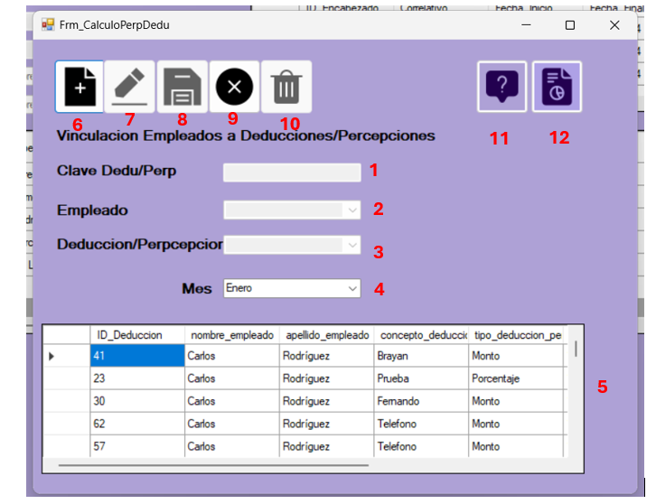

El formulario de cálculo de horas extras es una herramienta diseñada para calcular el total de horas adicionales trabajadas por un empleado en un mes específico.
La interfaz consta de los siguientes elementos:

- Clave de Dedu/Perp: Su finalidad es conocer la clave principal de la vinculación de empleado con deduccion/percepcion
- Empleado:Se selecciona el empleado sobre el que desea aplicarse como tal la vinculación
- Deduccion/PercepcionSe selecciona la percepción o deducción
- Mes: se debe seleccionar un mes sobre el que se aplicara
- Vinculacion: Se puede verificar lo que corresponde a los datos vinculados.
- Ingresar: es para habilitar los campos de texto sobre los que se ingresarán datos.
- Editar: la función permite, luego de haber seleccionado un registro, editarlo.
- Guardar: guarda los registros de lo ingresado o se actualiza.
- Cancelar: cancela la operación en curso.
- Eliminar: luego de haber seleccionado un registro, permite eliminarlo.
- Boton de Ayudas:Abre este menu.
- Boton de reportes: Permite ver los reportes de deducciones/percepciones.